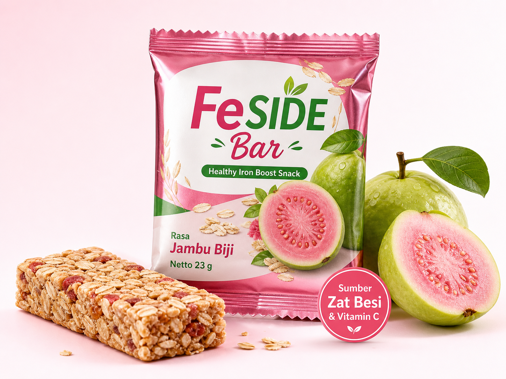

Mendukung asupan zat besi
Diformulasikan dengan fortifikasi zat besi terukur untuk membantu mendukung pemenuhan zat besi harian remaja putri.
FeSIDE Bar hadir dengan rasa jambu biji yang fresh, praktis dibawa, dan diformulasikan dengan zat besi serta vitamin C untuk menemani aktivitasmu setiap hari!

Healthy Iron Boost Snack
Sumber Zat Besi & Vitamin CProduct benefits
FeSIDE Bar menggabungkan zat besi dan vitamin C alami dari jambu biji dalam format snack bar yang mudah dikonsumsi sehari-hari.
Diformulasikan dengan fortifikasi zat besi terukur untuk membantu mendukung pemenuhan zat besi harian remaja putri.
Jambu biji memberi rasa segar sekaligus menjadi sumber vitamin C alami yang relevan dengan penyerapan zat besi.
Ukuran compact untuk bekal sekolah, les, olahraga, atau aktivitas padat tanpa ribet.
Ingredients story
Komposisi FeSIDE Bar dirancang agar terasa seperti snack, bukan suplemen. Bahan utama tetap familiar, dengan fortifikasi zat besi sebagai nilai fungsional tambahan.
Memberi tekstur, rasa gandum, dan karakter snack bar yang lebih mengenyangkan.
Menambah tekstur renyah ringan dan kesan natural pada produk.
Sumber bahan pangan nabati yang membantu membangun karakter fungsional produk.
Membantu memberi rasa manis alami dan tekstur yang lebih menyatu.
Memberikan rasa manis ringan sekaligus membantu binding pada snack bar.
Membangun rasa jambu biji yang segar dan mendukung identitas vitamin C alami.
Memperkuat rasa buah, aroma, dan warna khas FeSIDE Bar.
Fortifikasi zat besi terukur untuk mendukung fungsi utama produk.
Taste & texture
Snack fungsional harus tetap enak dimakan. FeSIDE Bar dirancang dengan rasa buah yang ringan, tekstur oats dan grains, serta manis yang tidak berlebihan.
Untuk siapa?
Target utama FeSIDE Bar adalah remaja putri usia 12-18 tahun, tetapi komunikasinya juga harus cukup rasional untuk orang tua, sekolah, dan komunitas edukasi gizi.
Untuk usia 12-18 tahun dengan aktivitas harian yang padat.
Cocok sebagai snack praktis untuk sekolah, les, dan kegiatan harian.
Alternatif snack yang punya nilai fungsional lebih jelas.
Relevan untuk edukasi gizi, bazar sekolah, atau uji pasar terbatas.
FAQ
Bagian ini sengaja dibuat jelas agar komunikasi produk tetap kredibel, aman, dan tidak berlebihan.
Bukan. FeSIDE Bar adalah snack bar pangan fungsional yang dirancang untuk mendukung pemenuhan zat besi harian, bukan obat atau pengganti terapi medis.
Tidak diklaim untuk menyembuhkan anemia. Untuk kondisi anemia atau keluhan kesehatan tertentu, konsultasikan dengan tenaga kesehatan. FeSIDE Bar diposisikan sebagai snack yang membantu mendukung asupan zat besi harian.
Produk ini ditujukan terutama untuk remaja putri usia 12-18 tahun, khususnya yang aktif di sekolah, les, olahraga, atau kegiatan harian lainnya.
Vitamin C dikenal relevan dalam mendukung penyerapan zat besi. Karena itu, FeSIDE Bar menggunakan karakter jambu biji sebagai sumber rasa dan nilai fungsional yang sesuai.
Satu FeSIDE Bar memiliki berat netto 23 g, dirancang agar compact dan mudah dibawa untuk aktivitas harian.
Saat ini FeSIDE Bar dapat diposisikan untuk pre-order, sample product, atau uji pasar terbatas. Gunakan landing page ini untuk mengumpulkan minat awal dan feedback calon pembeli.